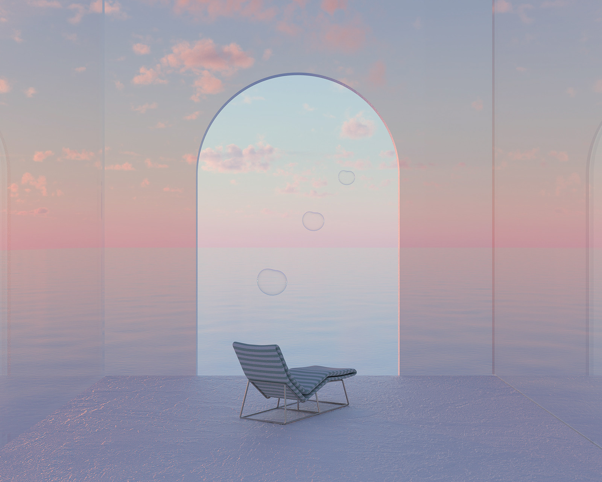
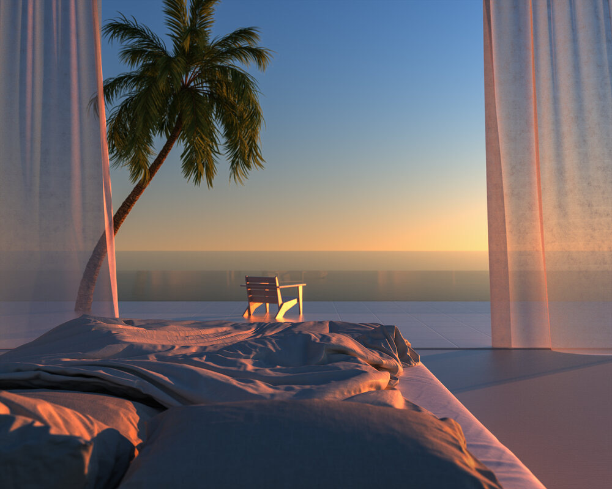
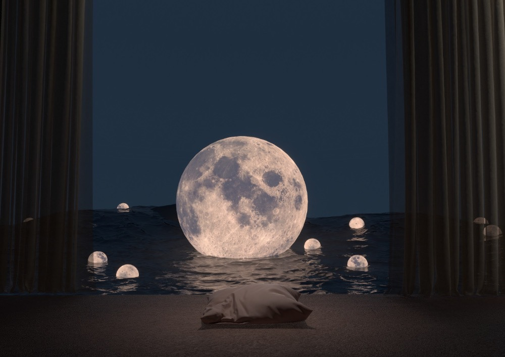
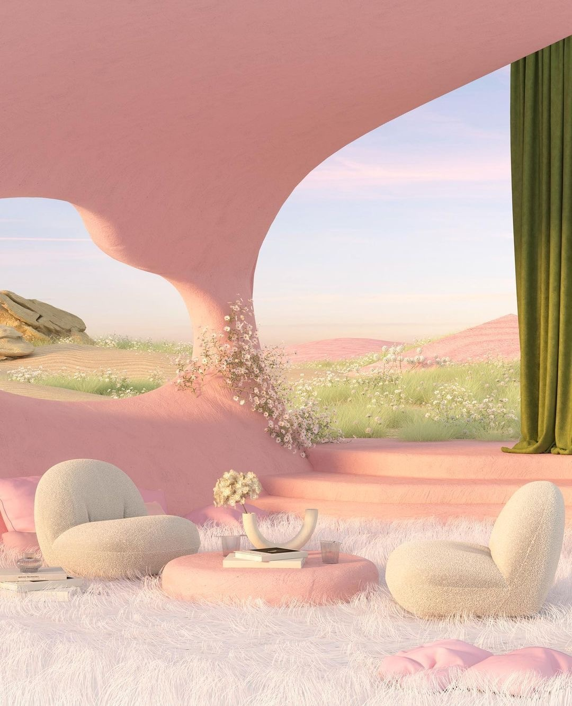
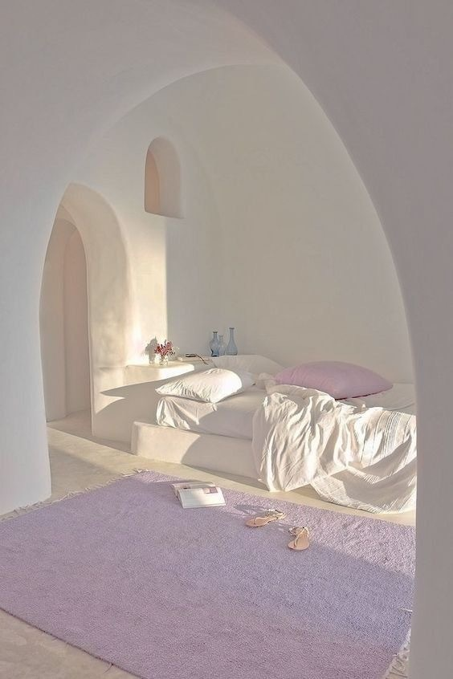

若逢新雪初霁，满月当空,下面平铺着皓影,上面流转着亮银, 而你带笑地向我步来,月色与雪色之间,你是第三种绝色
《绝色》余光中
风景如画，旋律优美。人生就像一次旅程，沿途会遇到各种风景，但最后我们都要回归。
——《菊次郎的夏天》


一星陨落，暗淡不了整个星空灿烂。一花凋零，荒芜不了整个春天。
——巴尔扎克
我以为，最美的日子，当是晨起侍花，闲来煮茶，阳光下打盹，细雨中闲逛，夜灯下读书，在这清浅时光里，一手烟火一手诗意，任窗外花开花落，云来云往，自是余味无尽，万般满意。
——汪曾祺《慢煮生活》


我们无须铭记每一段岁月，你曾经拥有过的，都是最好的时光。 你看，春风如水，山河温柔，一花一木都是你我喜爱的模样。缘之所寄，是这个春天。 一往而深，亦是这个春天。
——白落梅